貓先天性與成貓型甲狀腺功能低下：診斷、病理與 Levothyroxine 治療
主講：Antonio Tardo, DVM, PhD, Dipl. ECVIM-CA｜UC Davis 小動物內科助理教授
2026 年 10 月 9 日｜VET-KU × Texas A&M 內科研討會｜場次 20（Tardo 本次研討會最後一場）
🎧 課堂錄音與逐字稿（Plaud）↗⭐ 必記原則
- 先天性甲低是幼貓生長遲緩最常見的內分泌原因；「長不大＋遲鈍＋便秘」就要想到
- 幼貓血少時，優先順序是甲狀腺 → 生化 → CBC；只能驗一項就驗 TSH
- 犬用 TSH 可以用在貓：診斷甲低看的是升高端，犬用試劑在高值端可靠
- 幼貓的 TT4 生理上應高於成貓參考值；TT4「只是剛好低於下限」對幼貓來說已經很低
- 目前沒有「貓甲低但 TSH 正常」的報告：TSH 正常大致可以排除（講者估 80–90% 把握）
- 不要在甲低幼貓身上診斷 GH 缺乏：先治甲狀腺，再重測 IGF-1（這窩 1 個月內恢復）
- 貓以激素合成障礙（多為 TPO 缺陷）為主；缺陷可以是部分的，所以有些貓到成年才被發現
- Levothyroxine 20–40 µg/kg/天，幼貓用口服液、常秤重、依體重調整；沒跟上體重是治療不足最常見的原因
- 監測：一天一次 → 晚間給藥後 12 小時；一天兩次 → 給藥後 4–6 小時。TSH 還高就加量
- 早期治療的幼貓一年後體重、檢驗、X 光都正常，就是正常的貓
- 成貓型：胖、懶、毛差；不明原因氮血症（腎臟超音波正常）或控制不好的糖尿病要想到；TT4 約 1/4 正常，TSH 100% 升高
場次資訊與錄音說明
▾- 講題〈Feline congenital hypothyroidism〉。講者 Antonio Tardo，UC Davis 小動物內科助理教授；病例來自他之前在義大利 Bologna 大學的團隊（Golinelli, Tardo et al., Vet Sci 2022）。
- 🎤 錄音 09:01–09:22，約 15 分鐘演講加 7 分鐘提問。Speaker 1 = Tardo，其他編號是現場聽眾和主持人。
- 🎤 這是 Tardo 本次研討會的最後一場，結尾他感謝主辦單位、Texas A&M、贊助商和聽眾。
- 💡 補充 呼應前一天座談會：19 座談會報告四那隻 5 歲、終生矮小的甲低貓，Tardo 當時說「明天的課會講更多先天性的內容」，答案見第 6 節的「部分缺陷」。
1. 病例：一窩英國短毛貓
▾🎤 病史
- 🎤 一位同事兼飼主傳來一張 6 週齡的照片：中間 3 隻看起來比較小、有點捲毛。Tardo 第一眼覺得「都一樣啊，擔心什麼？」
- 英國短毛貓一窩 5 隻，3 隻發病（2 母 1 公），就診時 2 月齡。
- 喝母奶 4 週後改吃市售幼貓飼料；已驅蟲、開始打疫苗；之前沒有病史。
- 主訴：
- 最近幾週長得比同窩慢（約差 2 週）
- 精神差、比較不愛玩
- 學習困難：兄弟姊妹已經會用貓砂盆，牠們還不會
- 排便次數減少，其中一隻明顯便秘
🎤 理學檢查：外觀特徵
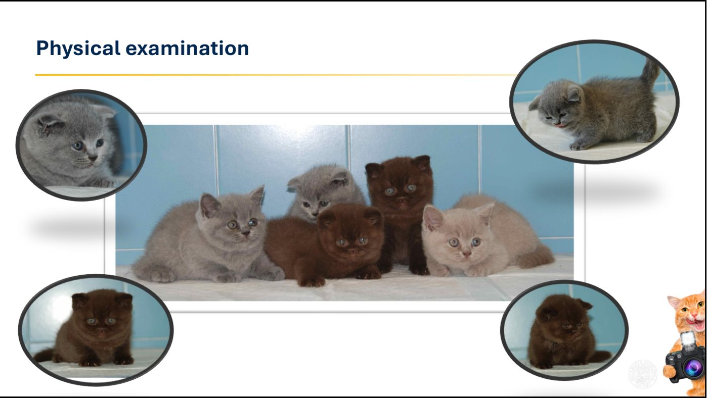
- 🎤 頭寬、脖子短、四肢短、身體短而方（不成比例侏儒）。
- 🎤 幼毛滯留（retained kitten coat）、耳廓向腹側捲曲。
- 🎤 眼睛顏色偏淡（淺藍）、輕度低體溫。
- 🎤 其中一隻腹部觸診可摸到糞塊。
乳齒萌發延遲
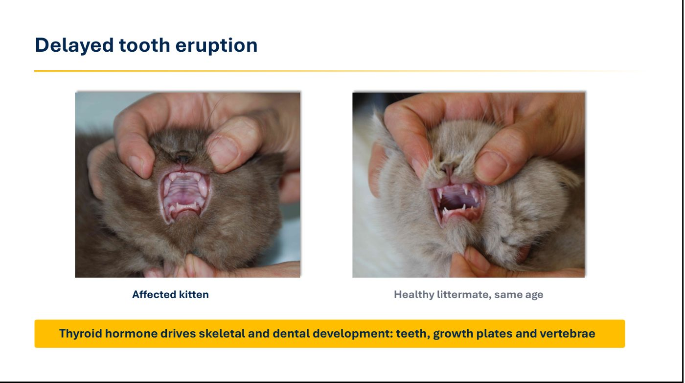
甲狀腺素帶動骨骼和牙齒發育：牙齒、生長板、椎體都會受影響。
2. 生長遲緩的鑑別診斷
▾🎤 兩大類：非內分泌 vs 內分泌
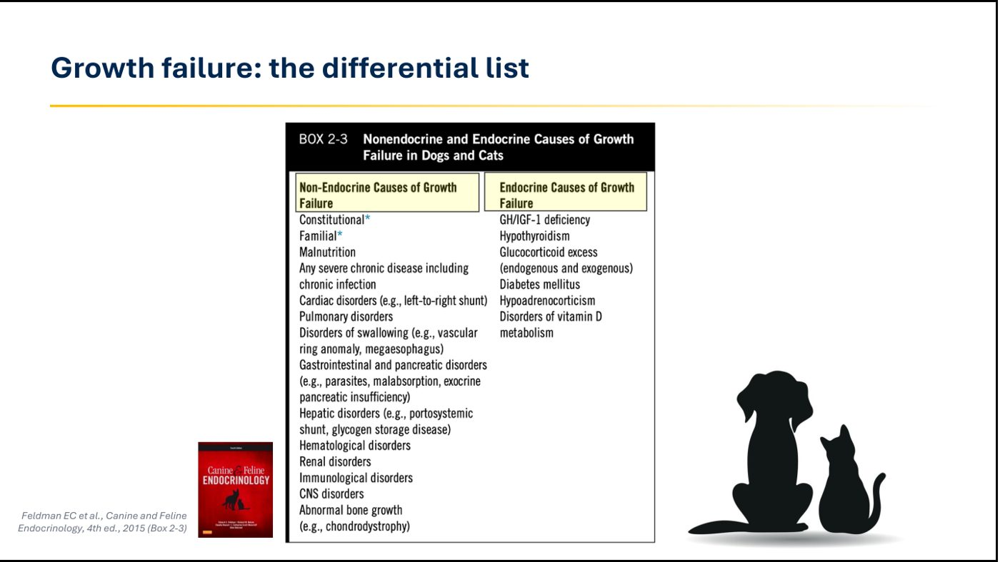
非內分泌原因
- 體質性、家族性、營養不良
- 任何嚴重慢性病（含慢性感染）
- 心臟（左→右分流）、肺臟
- 吞嚥問題（血管環異常、巨食道）
- 腸胃／胰臟（寄生蟲、吸收不良、EPI）
- 肝臟（PSS、肝醣儲積症）
- 血液、腎臟、免疫、中樞神經
- 骨骼發育異常（軟骨發育不良）
內分泌原因
- GH／IGF-1 缺乏（垂體性侏儒）
- 甲狀腺功能低下
- 糖皮質素過多（內生或外源性）
- 糖尿病
- 腎上腺皮質功能低下
- 維生素 D 代謝異常（佝僂症）
- 🎤 幾乎所有疾病都可能造成生長遲緩。這個病例是不成比例侏儒＋遲鈍，所以往內分泌、特別是甲低去想。
- 🎤 甲低是生長遲緩最常見的內分泌原因，在貓尤其如此。【更正】逐字稿作 "arteriosclerosis"。
- 🎤 幼貓用糖皮質素也會造成生長遲緩，用藥時要小心。
從病史與理學檢查縮小範圍
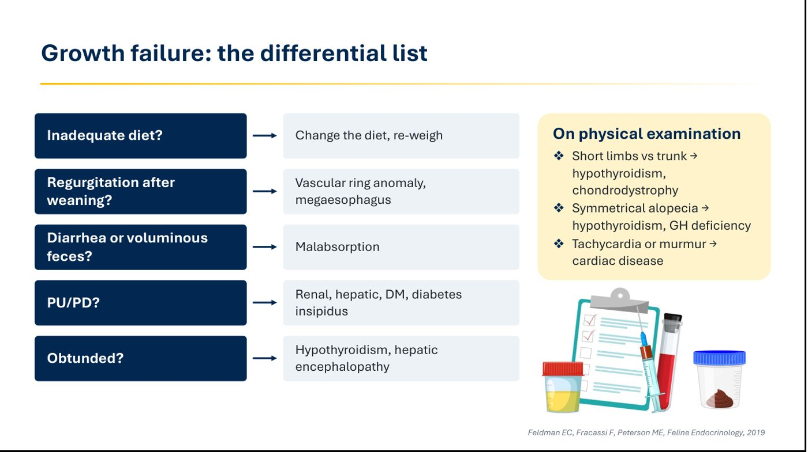
| 線索 | 優先考慮 |
|---|---|
| 飲食不當？ | 換飼料後再秤重 |
| 離乳後回吐？ | 血管環異常、巨食道 |
| 下痢或糞便量大？ | 吸收不良 |
| 多喝多尿？ | 腎、肝、糖尿病、尿崩症 |
| 精神遲鈍（obtunded）？ | 甲低、肝性腦病 |
| 四肢相對軀幹短 | 甲低、軟骨發育不良 |
| 對稱性脫毛 | 甲低、GH 缺乏 |
| 心搏過速或心雜音 | 心臟病 |
- 🎤 遲鈍是甲低的典型表現，所以人醫稱為呆小症（cretinism）。
- 🎤 課後補充（見 Q&A 6）：非內分泌原因中，寄生蟲要最先、最快排除；其次是肝臟（PSS）和吸收不良。內分泌原因中先天性甲低最常見，其他都很少見。
3. 血液檢查與 X 光
▾🎤 檢查規劃：血量是限制
- 最小資料庫：CBC、生化、理學檢查、糞檢（再查一次寄生蟲）。
- 甲狀腺功能：TT4，最重要的是 TSH。
- IGF-1：另一個可能的內分泌原因是腦下垂體功能不足（GH 缺乏）。
- 全身 X 光：看骨化中心和骨骼異常。
🎤 CBC 與生化
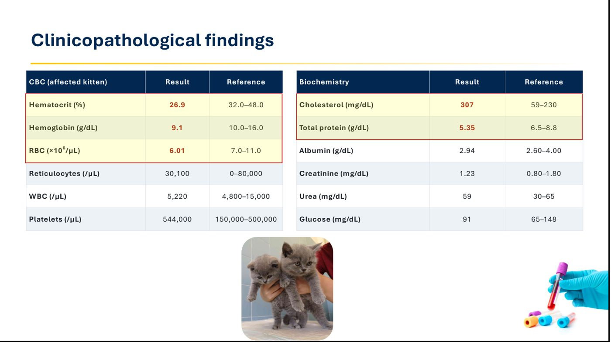
- 輕度貧血：Hct 26.9%、Hb 9.1 g/dL、RBC 6.01；網狀紅血球 30,100/µL（非再生性）。
- 🎤 幼貓的 Hct 本來就比成貓參考值低，所以他們同時驗了健康同窩：和兄弟姊妹比，發病貓確實貧血。
- 高膽固醇 307 mg/dL：講者強調這是提示甲狀腺功能異常的重要線索。【更正】逐字稿作 "hyperchloremia"。
- 輕度低蛋白（TP 5.35 g/dL）；肌酸酐 1.23、BUN 59 都在成貓範圍內。
🎤 X 光：發病幼貓 vs 健康同窩
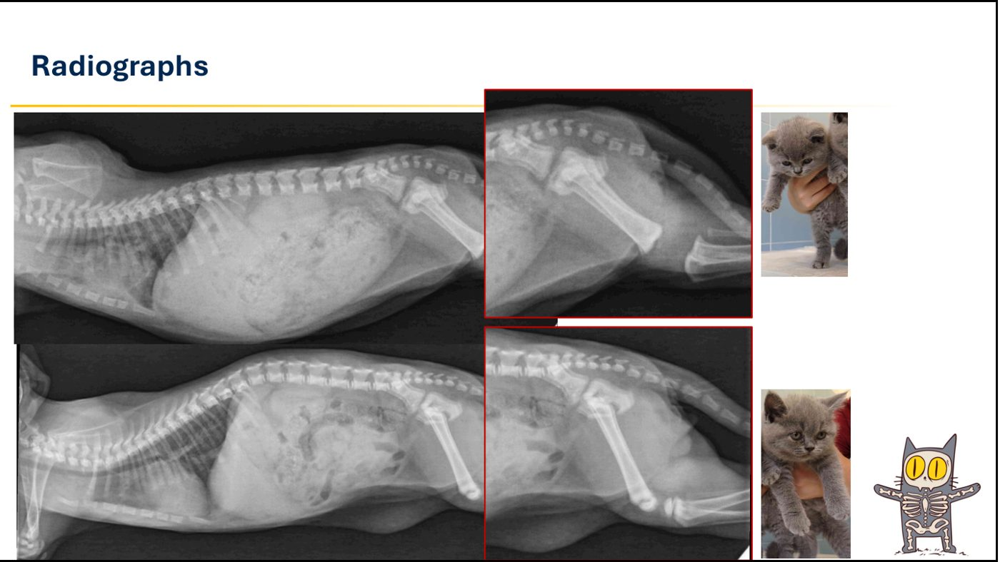
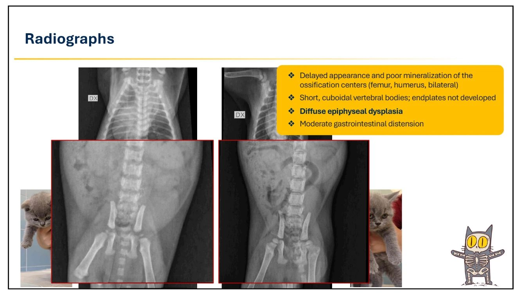
- 骨化中心出現延遲、礦化不足（股骨、肱骨，兩側）。🎤「誇張到看起來這隻貓沒有關節」。
- 椎體短、立方形，沒有終板。
- 瀰漫性骨骺發育不良（epiphyseal dysgenesis）。
- 中度腸胃道擴張：🎤這隻就是便秘的那隻。
4. 甲狀腺檢驗結果
▾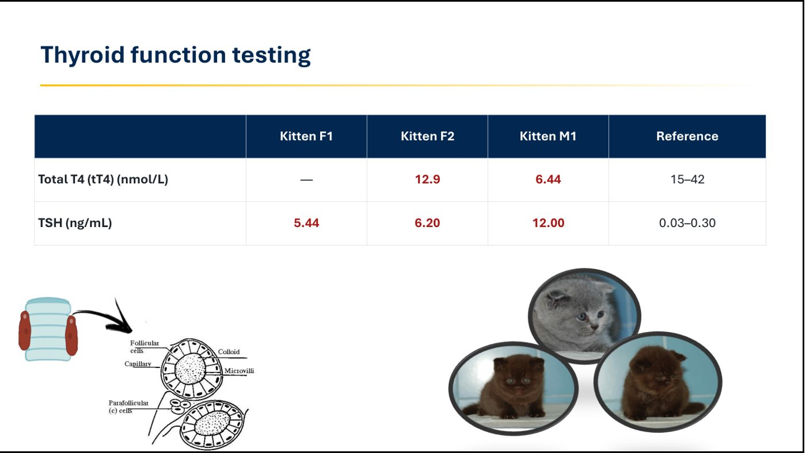
| F1 | F2 | M1 | 參考值 | |
|---|---|---|---|---|
| TT4（nmol/L） | —（血量不夠） | 12.9 | 6.44（偵測下限附近） | 15–42 |
| TSH（ng/mL） | 5.44 | 6.20 | 12.00（儀器上限，實際 ≥12） | 0.03–0.30 |
| 約為上限倍數 | ≈18× | ≈21× | ≥40× |
- 🎤 M1 的 12 是這台機器能測的最高值，超過 12 就測不出來。
- 🎤✍️ 筆記 這是犬用 TSH。前一天也有人問過：懷疑甲低時可以用犬用 TSH，因為我們看的是上限那一端，犬用試劑在這裡沒有問題。
- 🎤 TT4：一隻剛好低於參考值，一隻在偵測下限。
- 🎤 生長中的幼貓，TT4 應該要高於（成貓）參考範圍。所以 TT4「只是剛好低於下限」，對幼貓來說其實非常不夠。
5. IGF-1 為什麼低？
▾三隻 IGF-1 都低
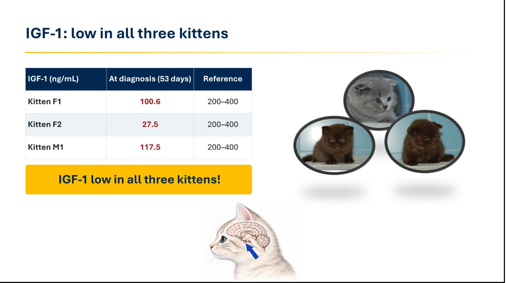
🎤 那牠們到底是先天性甲低、垂體性侏儒，還是兩個都有？Tardo 說他當時也很困惑，於是去「我的安全地帶：PubMed」。
📸 現場 Quante 2010：甲低幼貓的 IGF-1 與肝功能異常
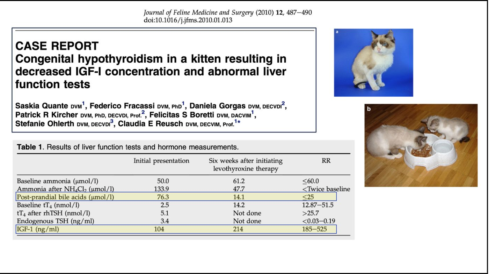
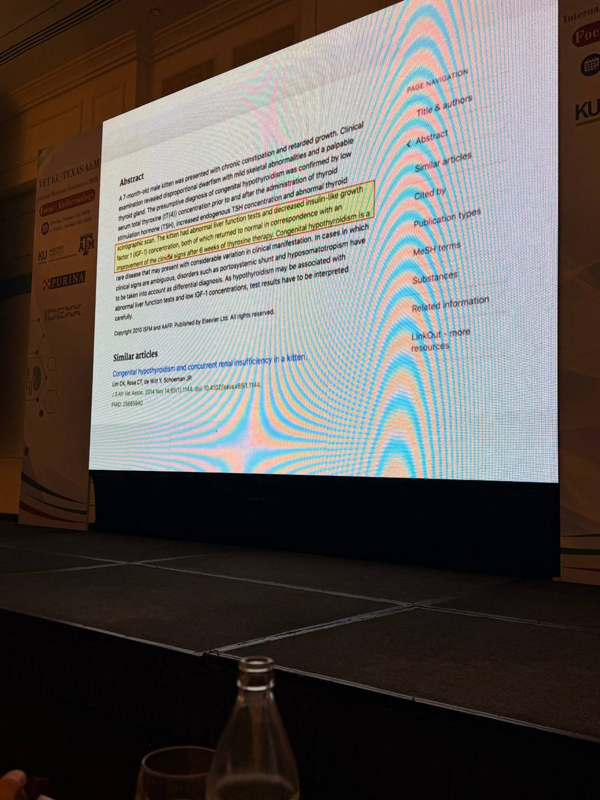
- 7 月齡公貓，慢性便秘＋生長遲緩；不成比例侏儒、輕度骨骼異常、摸得到甲狀腺。
- 確診：TT4 低，打 TSH 後仍低；內生性 TSH 升高；核醫掃描異常。
- 黃框重點：肝功能檢查異常＋IGF-1 低，甲狀腺素治療 6 週後兩者都恢復正常，臨床症狀也改善。
- 作者結論：表現差異大；症狀不典型時要和 PSS、GH 缺乏鑑別；甲低本身就可能造成肝功能異常和 IGF-1 低，判讀要小心。
- 🎤 這篇的作者之一是 Tardo 的指導教授（Fracassi）。
| Quante 2010 | 初診 | 治療 6 週後 | 參考值 |
|---|---|---|---|
| 餐後膽酸（µmol/L） | 76.3 | 14.1 | ≤25 |
| 氨耐受試驗後（µmol/L） | 133.9 | 47.7 | < 基礎值 2 倍 |
| TT4（nmol/L） | 2.5 | 14.2 | 12.87–51.5 |
| rhTSH 刺激後 TT4 | 5.1 | — | >25.7 |
| 內生性 TSH（ng/mL） | 3.4 | — | <0.03–0.19 |
| IGF-1（ng/mL） | 104 | 214 | 185–525 |
💡 補充 螢幕下方的 Similar articles：Lim CK et al. Congenital hypothyroidism and concurrent renal insufficiency in a kitten. J S Afr Vet Assoc 2014，可以和第 7 節「甲低降低 GFR」連起來看。
🎤✍️ 筆記 可能的原因：目前不知道
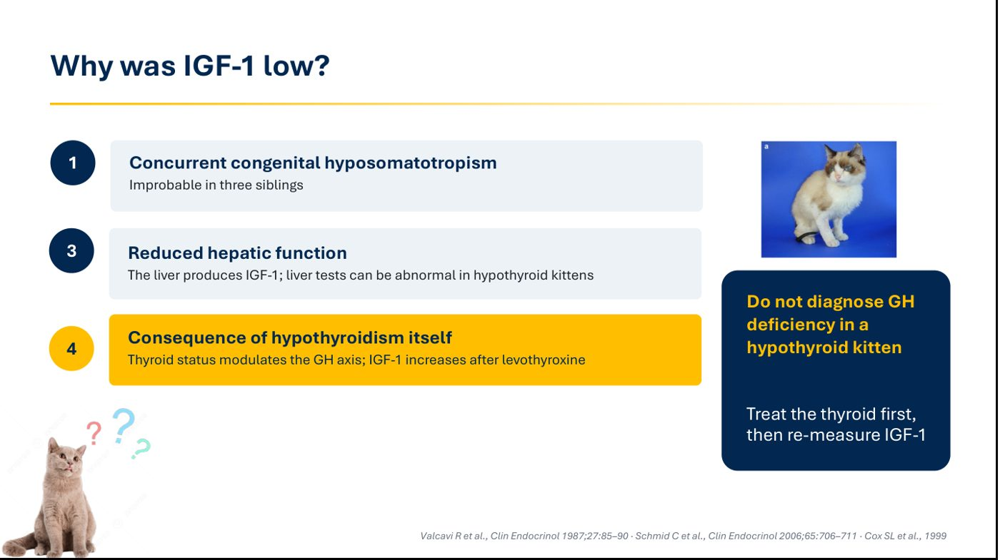
- 同時合併先天性 GH 缺乏：三隻同窩同時發生，不太可能；🎤也從沒被報告過。【更正】逐字稿誤作 "concurrent congenital hypothyroidism"，投影片是 hyposomatotropism。
- 肝功能下降：IGF-1 由肝臟在 GH 刺激下製造，肝功能不好就做不出來。
- 甲低本身造成：🎤講者認為最可能。甲狀腺素參與 IGF-1 的生成；補 levothyroxine 後 IGF-1 上升。
診斷：先天性甲狀腺功能低下
- TT4 低，TSH 為參考上限的 20–40 倍
- X 光瀰漫性骨骺發育不良
- IGF-1 低 → 治療後再評估
6. 盛行率與病因
▾🎤✍️ 筆記 貓約 80 例 vs 人 1/1400–2800
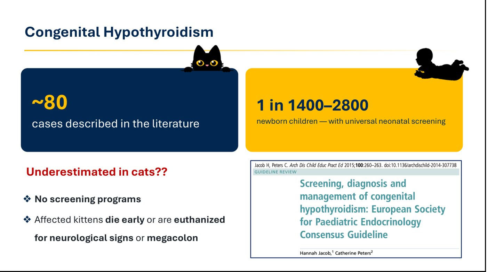
- 貓：文獻約 80 例；人類新生兒：1/1400–2800。
- ✍️ 筆記 人比較多，但那是因為人有例行新生兒篩檢。
- 🎤 人要篩檢，是因為新生兒很小的時候沒有症狀，但甲狀腺素缺乏會造成神經系統發育異常（呆小症），所以越早知道越好。貓應該也一樣，只是沒有篩檢計畫。
- 🎤 多數病貓早夭，或因神經症狀、難以處理的嚴重便秘／巨結腸被安樂死。這可能是它「很少見」的原因，所以「也許沒那麼少見」。
🎤 病因：發育不全 vs 激素合成障礙
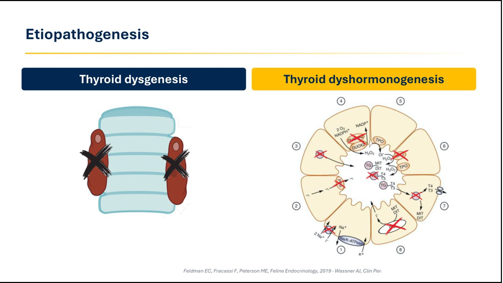
甲狀腺發育不全（dysgenesis）
- 甲狀腺沒有正常發育：發育不良或完全沒有
- 在貓比較少見
激素合成障礙（dyshormonogenesis）
- 甲狀腺正常存在，但做不出激素
- 在貓比較常見
- 通常是甲狀腺過氧化酶（TPO）的問題，也可能是其他酵素步驟
💡 補充 這正好回答 19 座談會報告四：5 歲、終生矮小、TSH >12 的貓，很可能就是部分缺陷的先天性甲低。
7. 臨床特徵（23 隻幼貓）
▾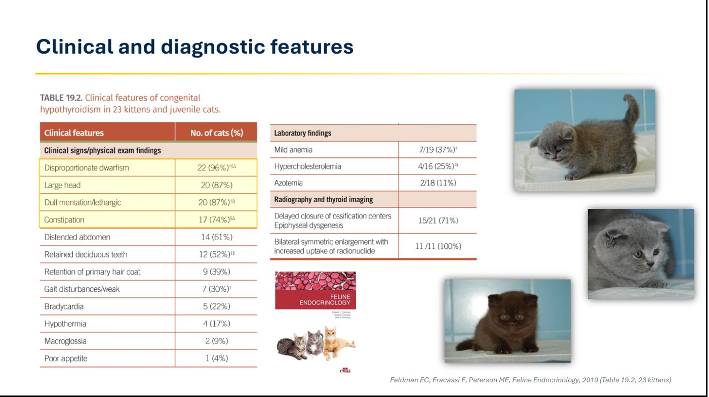
症狀與理學檢查
- 不成比例侏儒 96%
- 頭大 87%、遲鈍 87%
- 便秘 74%
- 腹部膨大 61%、乳齒滯留 52%
- 幼毛滯留 39%、步態異常／虛弱 30%
- 心搏過緩 22%、低體溫 17%、巨舌 9%
檢驗與影像
- 輕度貧血 37%
- 高膽固醇 25%
- 氮血症 11%
- 骨化中心閉合延遲／骨骺發育不良 71%
- 核醫：兩側對稱腫大、攝取增加 100%（11/11）
- 🎤 最重要的兩個：不成比例侏儒和便秘。幼貓便秘就應該評估甲狀腺功能。
- 🎤✍️ 筆記 氮血症是因為甲狀腺功能會影響 GFR：甲狀腺素低 → GFR 下降 → 肌酸酐上升。
8. 該驗哪一項？TSH
▾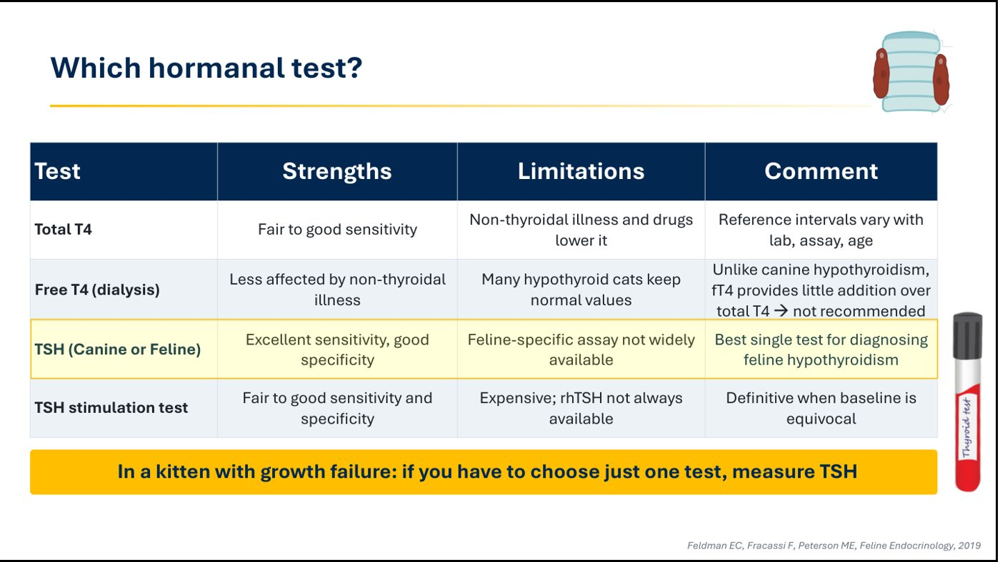
| 檢驗 | 優點 | 限制 | 評語 |
|---|---|---|---|
| Total T4 | 敏感度尚可到好 | 非甲狀腺疾病、藥物會讓它下降 | 參考值依實驗室、方法、年齡而異 |
| Free T4（透析法） | 較不受非甲狀腺疾病影響 | 很多甲低貓 fT4 仍正常 | 和狗不同，在貓 fT4 比 TT4 多不了多少 → 不建議 |
| TSH（犬用或貓用） | 敏感度極佳、特異度好 | 貓專用試劑不普及 | 診斷貓甲低的最佳單一檢驗 |
| TSH 刺激試驗 | 敏感度、特異度尚可到好 | 貴，rhTSH 不一定買得到 | 基礎值模稜兩可時可以確診 |
- 🎤✍️ 筆記 TT4：年輕動物（幼貓、幼犬）的 TT4 通常偏高，甚至高於參考範圍，因為我們用的是成年動物的參考值。「我通常預期它偏高，而這隻貓不是甲亢，只是生長中的貓正常的甲狀腺功能。」
- 🎤 fT4：在先天性甲低不是重要的檢驗，所以這個族群通常不驗。
- 🎤 TSH：只有犬用的就用犬用，有貓用的更好。抽一點點血驗 TSH，大多數時候本身就能診斷，人醫也是這樣做。
- 🎤 TSH 刺激試驗：這窩貓也做了，只是為了研究，打 TSH 前後 TT4 一樣。重組 TSH 不普及，有的國家也很貴。
這和狗不同：約 1/3 的甲低狗 TSH 正常，狗不能用 TSH 排除（見 17）。
9. 核醫掃描與甲狀腺腫
▾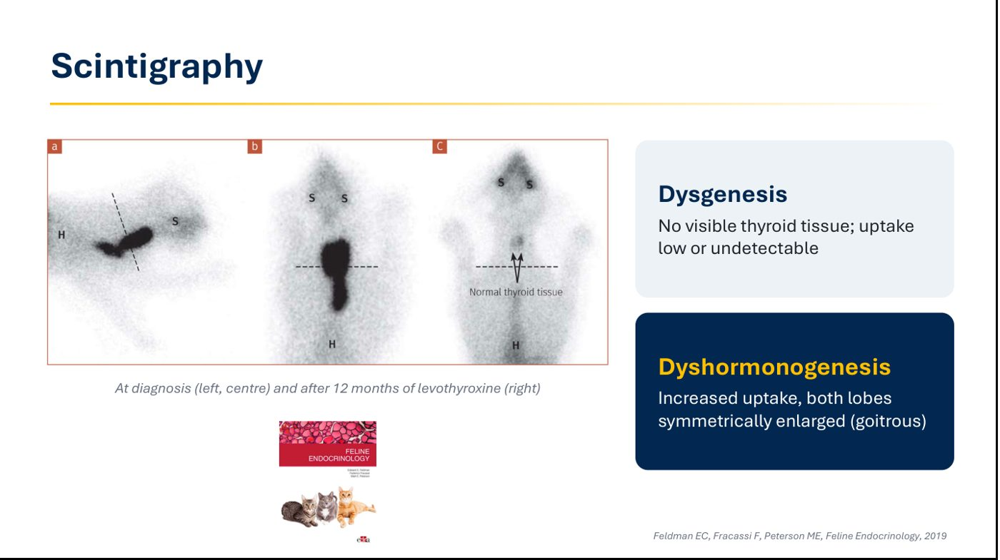
發育不全型
- 看不到甲狀腺組織
- 攝取很低或測不到
激素合成障礙型
- 攝取增加
- 兩葉對稱腫大（甲狀腺腫）
- 🎤✍️ 筆記 老師通常不做：甲狀腺激素檢驗就足以診斷。【更正】逐字稿作 "thyroid nodules are enough"。
- 🎤 圖中這隻治療後甲狀腺完全恢復正常大小。甲狀腺會變大，是因為 TSH 拚命刺激，但酵素壞了做不出激素。
- 🎤 理學檢查大約一半的貓摸得到甲狀腺腫。甲狀腺腫要幾個月才長得出來，通常 5–6 月齡之後才摸得到；這窩 2 月齡的幼貓完全沒有甲狀腺腫，只是時間還不夠。
10. Levothyroxine 與監測
▾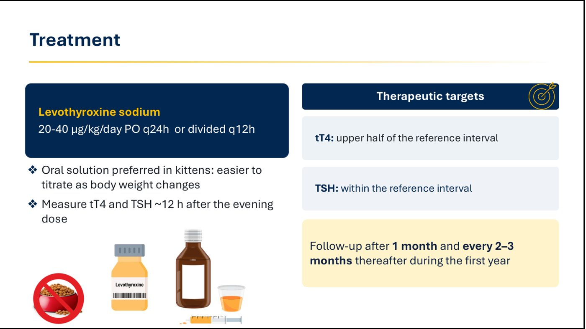
劑量與劑型
- Levothyroxine sodium 20–40 µg/kg/天 PO，一天一次或分兩次。
- 🎤 Tardo 偏好一天一次：幼貓很小，一窩又不只一隻發病，一天一次對照顧者容易得多。
- 幼貓優先用口服液：長得很快，容易依體重調整。
- 🎤✍️ 筆記 劑量要隨體重增加調整（Q&A 2：沒跟上體重是治療不足最常見的原因）。
🎤✍️ 筆記 採血時間
| 給藥方式 | 何時驗 TT4 與 TSH |
|---|---|
| 一天一次（晚上給） | 晚間給藥後約 12 小時（投影片寫法） |
| 一天兩次 | 給藥後 4–6 小時（高峰） |
💡 補充 TSH 反映一段時間的整體狀態，比較不受採血時間影響，所以調整主要看 TSH；每次追蹤用同一個時間點，前後才能比較。
治療目標
- TT4：參考範圍上半部。🎤多數幼貓甚至希望 TT4 高於參考範圍（成貓參考值）。
- TSH：回到參考範圍內。
- 🎤✍️ 筆記 如前一天說過的，TSH 還高，代表對這隻貓來說 T4 還不夠，要增加劑量。
| TSH | TT4 | 解讀 | 處理 |
|---|---|---|---|
| 高 | 低 | 劑量不足（或沒確實餵藥、吸收差） | 確認餵藥 → 依新體重加量 |
| 高 | 正常 | 仍然不夠 | 加量 |
| 正常 | 上半部／略高 | 達標 | 維持，依體重追蹤 |
| 低／測不到 | 明顯高於範圍 | 可能過量 | 減量；注意心搏過速、體重下降、過動 |
💡 犬用 TSH 低值端分辨力差，判斷過量要靠 TT4 明顯偏高加上臨床症狀。
追蹤頻率
- 1 個月後回診，第一年內每 2–3 個月一次。
- 🎤 一年之後每 6 個月；之後一年一到兩次即可。「早期診斷的話，牠們就是正常的貓。」
11. 三隻幼貓一年追蹤
▾外觀與 X 光
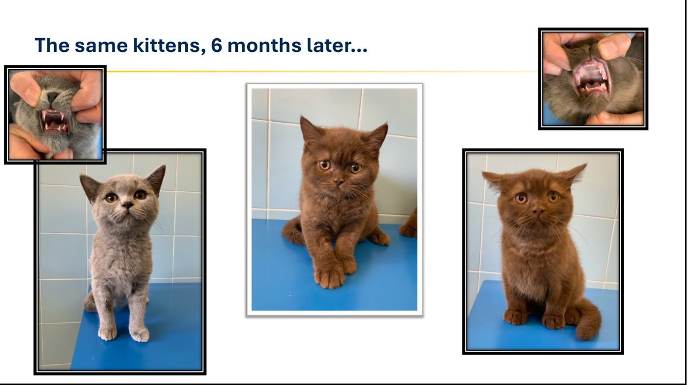
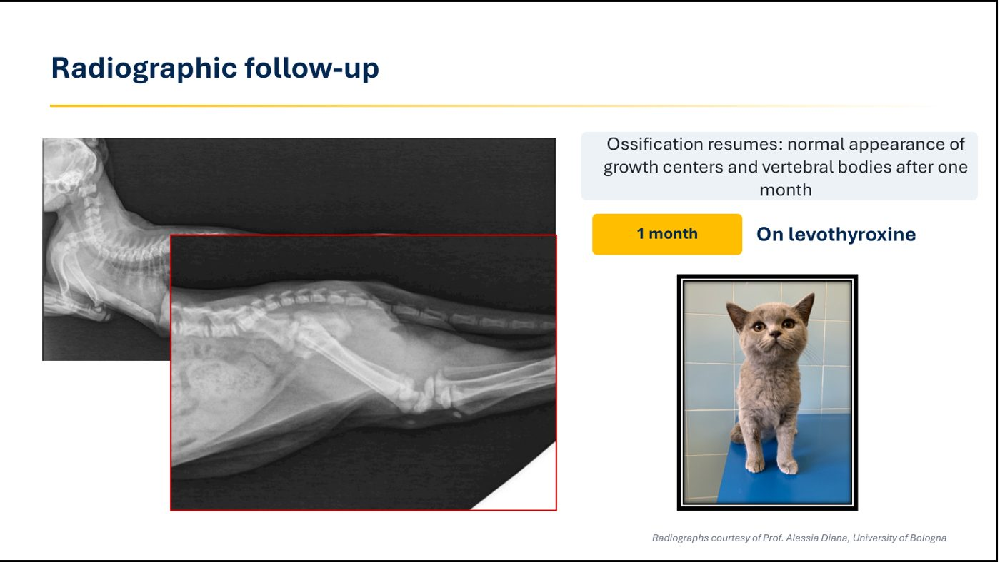
🎤 開始 levothyroxine 後改善非常快，X 光的骨骺和骨化中心異常也一樣。
🎤 體重
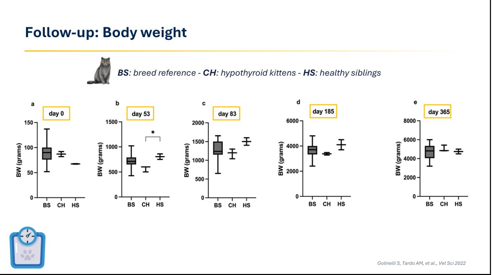
- 時間點：第 0 天（出生）、第 53 天（診斷）、第 83 天（治療 1 個月）、約 6 個月、約 1 年。
- 🎤 BS 是他們問卷調查英短繁殖者得來的各年齡體重（繁殖者通常會記錄幼貓體重）。
- 出生時三組一樣；診斷時 CH 明顯比 HS 輕（*）；治療 1 個月開始追上品種參考值；6 個月時同窩仍較大；1 年時完全一樣。
- 🎤 早期診斷，牠們會像正常動物一樣，也沒有併發症。
🎤 IGF-1
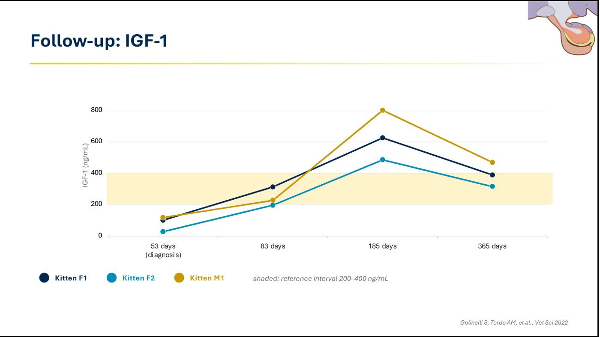
- 診斷時低；治療 1 個月恢復正常；6 個月時高於參考範圍；1 年時又回到正常。
- 🎤 6 個月時偏高是正常的：生長中的動物 IGF-1 本來就會高於（成年）參考範圍，和 TT4 的道理一樣。
🎤 TT4 與 TSH
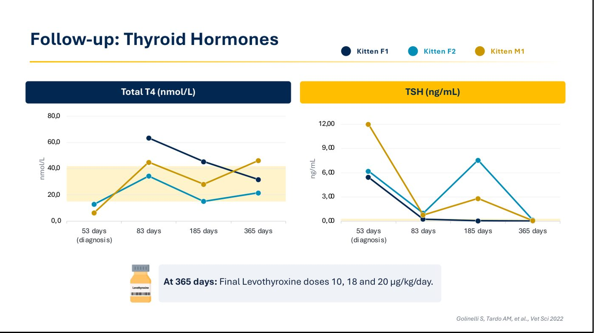
- TT4 診斷時低、1 個月時正常。🎤「這幾隻要找到正確劑量並不容易。」
- 6 個月時有些貓 TSH 又很高（F2 約 7.5，M1 也略升），所以持續加量，直到 TSH 正常。
- 1 年時每一隻的 TSH 都正常了。
- 🎤 最終劑量差很多：一隻只要 10 µg/kg/天，其他是 18、20。原因是部分缺陷的貓受影響較輕，需要的劑量較低；劑量非常個體化。
12. 成貓自發性原發甲低（Cobucci 2026，17 隻）
▾貓甲低的三種臨床型態
- 醫源性（甲亢治療後）：最常見（＋）
- 先天性：少見（－）
- 成貓自然發生：少見（－）
🎤 族群與就診原因
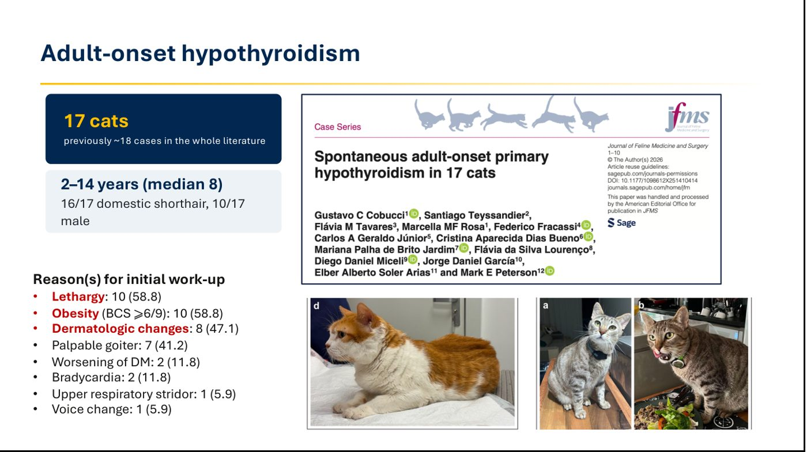
- 🎤 幾個月前才發表，是目前最大的成貓自發性甲低病例系列。之前文獻全部只有約 18 例，這篇 17 隻。【更正】逐字稿作 "70 cases"。
- 2–14 歲（中位數 8），16/17 家貓短毛，10/17 公貓。🎤可能有公貓傾向，但罕見病很難談品種／性別傾向。
- 就診原因：精神差 58.8%、肥胖（BCS ≥6/9）58.8%、皮膚變化 47.1%、摸得到甲狀腺腫 41.2%、糖尿病惡化 11.8%、心搏過緩 11.8%、上呼吸道喘鳴 5.9%、聲音改變 5.9%。
- 🎤 摸到甲狀腺腫時，通常不會想到甲低。Tardo 的做法：TT4 低時想到甲低，就驗 TSH；TSH 高就是診斷。
🎤 症狀與檢驗
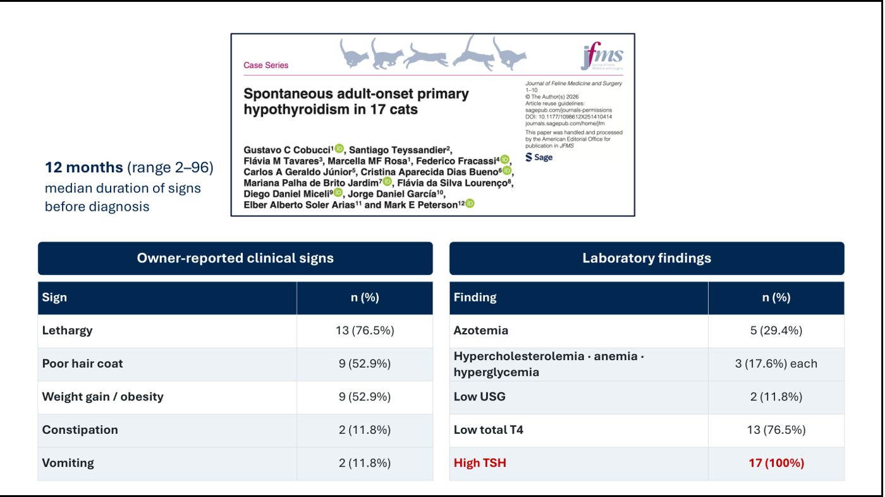
飼主觀察到的症狀
- 精神差 76.5%
- 毛質差 52.9%
- 體重增加／肥胖 52.9%
- 便秘 11.8%、嘔吐 11.8%
檢驗
- 氮血症 29.4%
- 高膽固醇、貧血、高血糖各 17.6%
- 尿比重低 11.8%
- TT4 低 76.5%
- TSH 高 100%
- 🎤 肥胖、怎麼減都減不下來的貓，要把甲低列入鑑別。
- 🎤 成貓型便秘不常見，和先天型不同。
- 🎤 Mark Peterson 另一個病例系列中，約 30% 的貓有 PU/PD。這和狗不同，原因不明。
- 🎤 症狀中位數一年才確診：罕見、難以懷疑的病就會這樣慢性地拖著。
- 🎤 氮血症：Tardo 的經驗是，成貓有氮血症但腎臟超音波完全正常時，要想到甲低、評估甲狀腺功能。【更正】逐字稿作 "atypia／adrenal neoplasia"。
- 🎤 甲低會造成胰島素阻抗，治療甲低後糖尿病會改善。講者提到的機轉是甲低時 GH 分泌增加（逐字稿此段轉文字不清）。
- 🎤✍️ 筆記 TT4 只有約 75% 偏低，也就是 T4 可以正常：「在參考範圍內，但對那隻貓來說不夠。」TSH 100% 升高，仍是最好的檢驗。
T4 正常的可能原因：代償期（高 TSH 把剩餘組織推到極限，類似人的亞臨床甲低）、甲狀腺腫型、每隻貓的個體基準不同。
🎤 影像、治療與兩個關聯
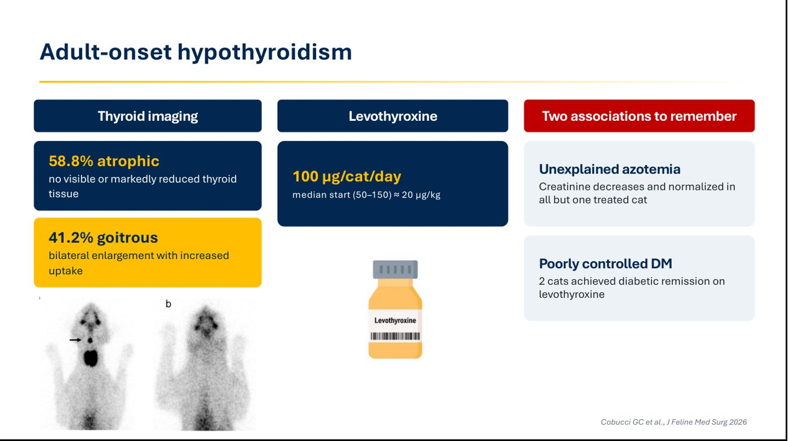
- 甲狀腺影像：58.8% 萎縮型（看不到或明顯變少）、41.2% 甲狀腺腫型（兩側腫大、攝取增加）。🎤和幼貓一樣，兩種型態都有。
- Levothyroxine 起始中位數 100 µg/隻/天（50–150），約 20 µg/kg，和先天型差不多。
- 兩個要記住的關聯：
- 不明原因氮血症：治療後肌酸酐下降，除了 1 隻都恢復正常。🎤成貓、腎臟沒有異常、有氮血症又胖，就想到甲低。
- 控制不好的糖尿病：2 隻在治療後達到緩解。🎤一隻是 Bologna 的病例，另一隻來自其他中心。
🎤 治療前後
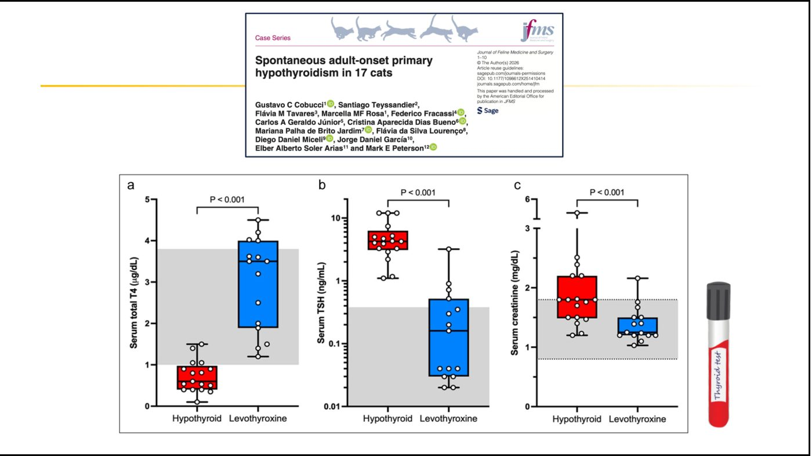
- TT4：多數低，部分在參考範圍內；治療後正常或在上限／略高於上限。
- TSH：多數高於 1 ng/mL（犬用 TSH 上限 0.3），🎤和 Tardo 的經驗一致。治療後多數恢復，但仍有幾隻偏高：找到正確劑量並不容易。
- 肌酸酐：治療前有輕度氮血症傾向，治療後多數正常，1 隻仍有氮血症。
13. 課後 Q&A
▾這窩三隻在治療 1 個月後驗 IGF-1 就完全正常了。幼貓如果長得很快、沒有症狀，不需要驗 IGF-1，因為垂體性侏儒很少見；年輕、長不好、有理由懷疑時才驗。
在狗則是每一隻甲低狗都可能有胰島素阻抗，治療甲低後血糖控制通常改善，有些可以減少胰島素。甲低在狗是最常見的疾病之一，在貓很少見。
那隻貓約 9–10 歲，糖尿病一陣子後因控制不好轉診，結果發現甲低，同時還有肢端肥大症，可能是多重內分泌病。治療甲低後糖尿病目前仍在緩解。（逐字稿關於 cabergoline 的一句轉文字不清。）肢端肥大症會在後面的場次講。
Take-home、更正表與參考資料
▾Take-home messages
- 生長遲緩的主要鑑別診斷之一：盛行率被低估。🎤繁殖者說幼貓「跟不上」時，一定要驗 TT4 和 TSH。
- TSH 是最好的單一檢驗：只看 TT4 會被誤導，不論診斷時或治療中。🎤血少、預算少，只驗 TSH 通常就夠了。
- IGF-1 低要小心：先治甲狀腺，再重測。
- 早期治療能讓生長恢復正常：體重、檢驗、X 光都改善。
- 成貓型也存在：常被忽略；肥胖、精神差、不明原因氮血症的貓要想到。🎤「你們是專科醫師，要把這個病放在心上，因為你可以改變那隻貓的結局。」
【更正】 逐字稿轉文字錯誤對照
| 逐字稿 | 應為 |
|---|---|
| arteriosclerosis is the most common condition that causes drop failure | hypothyroidism is the most common (endocrine) cause of growth failure |
| hypotranism／creatinism | hypothyroidism／cretinism |
| arbovirus／arbovirism／hypotrichosis／apoptoroid／acotroyd／apodorism／apatolysis／arthrogryposis／hypotonia／hypothermism／hypothermia | hypothyroidism |
| conjugal hypothermism／conjugal hypothermia | congenital hypothyroidism |
| trichotillomania | cretinism（神經系統發育異常） |
| earcot | kitten coat（幼毛） |
| film pieces on palpation | fecal masses（糞塊） |
| outdone | obtunded（遲鈍） |
| vegetative | regurgitation（回吐） |
| albinism | alopecia（脫毛） |
| body cancer derived from liver insufficiency | hepatic encephalopathy（轉文字不清，依📄 7） |
| PUD | PU/PD |
| hyperchloremia | hypercholesterolemia |
| tower test | thyroid panel |
| K9SH／KSH／BPSH／SH／pH | canine TSH／TSH |
| folin assay | feline assay |
| epifascial degeneration／diffuse atypicality genesis | epiphyseal dysgenesis |
| anteciply／LTC blits／HA | healthy sibling（HS） |
| IgG1／AKF one／ITF one／IGF one | IGF-1 |
| concurrent congenital hypothyroidism（IGF-1 原因 1） | concurrent congenital hyposomatotropism |
| TGH | GH |
| shear force, increase in creatine | lower GFR, increased creatinine |
| thyroid genesis | thyroid dysgenesis |
| dysmorphogenesis | dyshormonogenesis |
| tyroperosinase | thyroid peroxidase（TPO） |
| DDCs | （轉文字不清，指缺陷） |
| natriuretic thyroid tissue | no visible／atrophic thyroid tissue |
| thyroid nodules are enough | thyroid hormone tests are enough |
| levotuxin／levetiracetam／levodopa sin／levodarson／levotiroxine | levothyroxine |
| 10 microgram per kick per day | 10 µg/kg/day |
| British Shorter／Breton cat | British Shorthair |
| 70 cases | 17 cats（📄 32） |
| leather chip | lethargy |
| morphological changes（50%） | dermatologic changes（📄 32） |
| poor acord／air core changes | poor hair coat |
| atypia／atopy／azoospermia／adrenal neoplasia | azotemia |
| hypoglycemia | hyperglycemia（📄 33） |
| MGLH is the most modern hypoglycemic drug | （轉文字不清，GH 與胰島素阻抗相關） |
| gut remission | diabetic remission |
| 20 meq per kg | 20 µg/kg |
| Fiona | the owner（飼主） |
| cosmal absorption | malabsorption |
| teropuncture／third puncture | thyroid function |
| Thai boy in the queen | thyroid status of the queen（母貓） |
| sepsisian | portosystemic shunt（PSS） |
| macromegaly／hypomegaly／chromegaly | acromegaly |
| Dr. Montes | （轉文字不確定，指後面肢端肥大症場次的講者） |
| Dr. Tavola／Phil | Dr. Tardo |